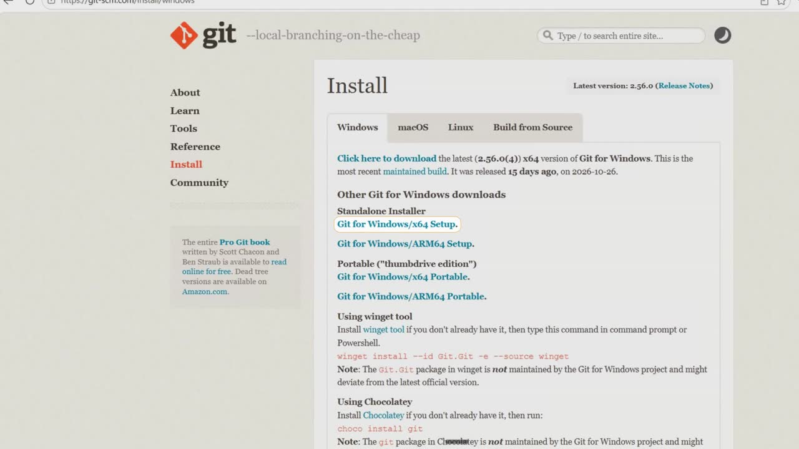
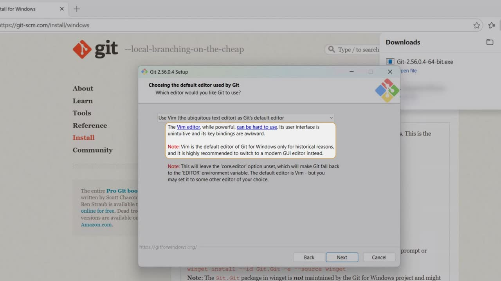
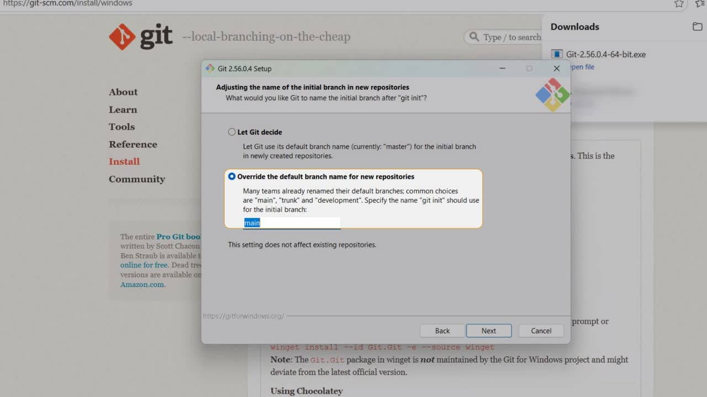
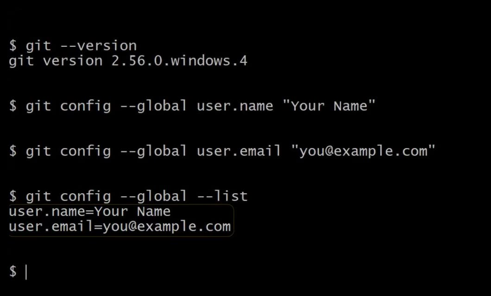

Prefer to watch? This post goes with the video (2:46). Open it on YouTube.
Why install Git at all?
Say you keep saving copies of your work: final, final 2, final really. After a week, you no longer know which one is which.
Git does that saving for you. It keeps every saved version of your project, so you can always go back to an earlier one.
Many tools also expect Git to be there. Coding agents save their work with it, and GitHub needs it. So it is worth installing once, properly.
What you need first
- A Windows PC where you are allowed to install programs.
- A browser.
Git is free. The official download page is Git for Windows on git-scm.com.
Download the installer
Get the installer from git-scm.com
Type git-scm.com in your browser. On the home page, click Install for Windows. Then pick Git for Windows/x64 Setup, or the ARM64 one if your PC has an ARM chip.

Install it: keep the defaults, change two
The installer asks 12 questions. We keep the default on all but 2, and each change has a reason.
Start the installer
When the download finishes, click Open file. Windows may ask if this app can make changes to your device: click Yes. The first page is the licence, the GNU General Public License, so click Next.
Keep the folder, the components and the Start menu
These three pages stay as they are, so click Next on each.
Change 1: make Notepad Git's editor
This is the editor Git opens when it wants a message from you. The default is Vim, and the installer itself says Vim can be hard to use. So open the list and choose Use Notepad as Git's default editor, which already comes with Windows. Click Next.

Change 2: call the first branch main
This page names the first branch of every new project. Let Git decide would call it master. GitHub and many teams use main, so choose Override the default branch name for new repositories. Keep main in the box, and click Next.

Keep the next 7 defaults, then install
The next 7 pages keep their defaults, starting with the one marked Recommended. Click Next on each, then Install, and setup copies the files.
Finish, and open Git Bash
On the last page, tick Launch Git Bash, untick View Release Notes, and click Finish.
Check it, then tell Git your name
Git Bash is a terminal that comes with Git. It opens by itself after Finish.
Ask Git for its version
Type this and press Enter:
Git answers with a line that starts git version. Your number may be newer than ours, and that is fine. If it answers, Git is installed.
Tell Git who you are
Every version you save carries a name and an email, so set yours once, now. Type your own name, and the email you use on GitHub, in place of the examples:
Then list the settings, to see that both are there:

Where we are
Git is ready now, for your first project. In a nutshell:
- Git came from git-scm.com, the official page, and it is free.
- We kept every default but two: Notepad as the editor, and main as the first branch.
- Git Bash answered
git --version, and Git now knows your name and email.
One question for you: which editor did you choose for Git, and why? Leave me a line below the video.
References
Where each step and setting on this page comes from. Checked on 13 Nov 2026.
- Git for Windows — Install Git on Windows, git-scm.com. The official download page: the x64 and ARM64 Setup installers. link
- Git for Windows — The installer's own pages (recorded 10 Nov 2026). Vim "can be hard to use", and it is "highly recommended to switch to a modern GUI editor"; Let Git decide uses "master"; "many teams already renamed their default branches; common choices are main…".
- GitHub Docs — Changing the default branch. GitHub names the first branch of a new repository main. link
- Git — Pro Git, First-Time Git Setup. Setting user.name and user.email with git config --global, and listing them with git config --list. link
New chapters and episodes come out every week. Follow along on YouTube or the WhatsApp channel. Questions? Ask under the video on YouTube; I read every comment.